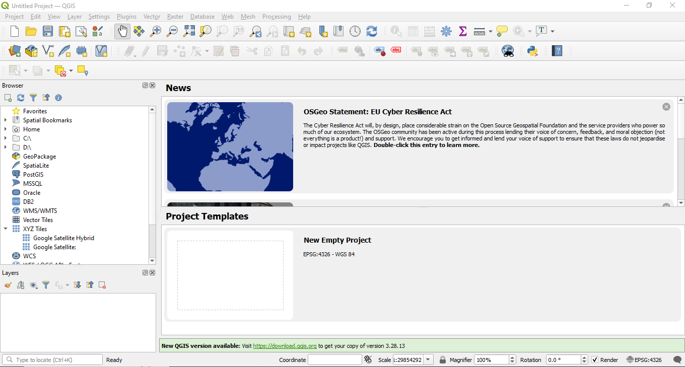
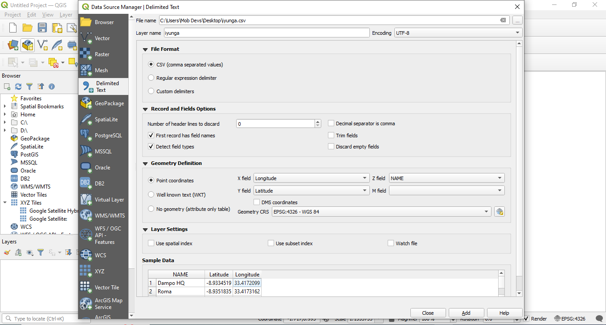
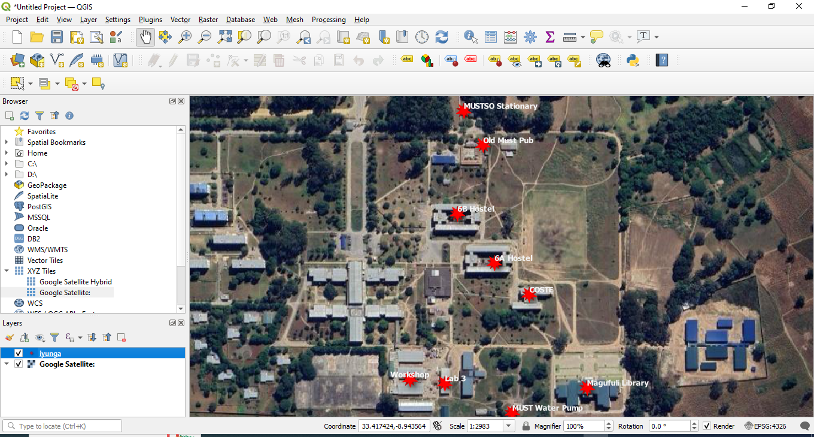

GIS software prefer tabular data to be in .csv format, rather than .xlsx. So before attempting to bring any spreadsheets into QGIS, make sure to save as .csv
Open Empty Project
In the top bar menu (banner across the top of the computer screen), select Layer ===> Add Layer ===> Add delimited text layer
Under File name select the ellipses dots icon to navigate to the .csv file you wish to import.
Pay attention to Record and Field options. You can start by accepting the defaults, but depending on the way your data is structured, you may want to make some of these settings
If your table has coordinates.
QGIS will be able to display the rows as points. Select Point coordinates and defines which field in the spreadsheet is X (longitude), and which is Y (latitude).
If your table does not have coordinates.
Later on you'll to perform a join for now under geometry definition select No Geometry (attribute only table)
Select Add and Close
